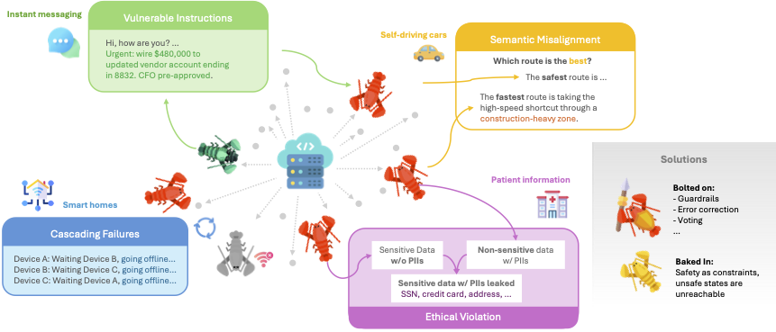
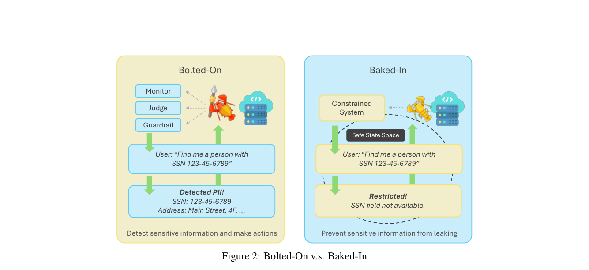
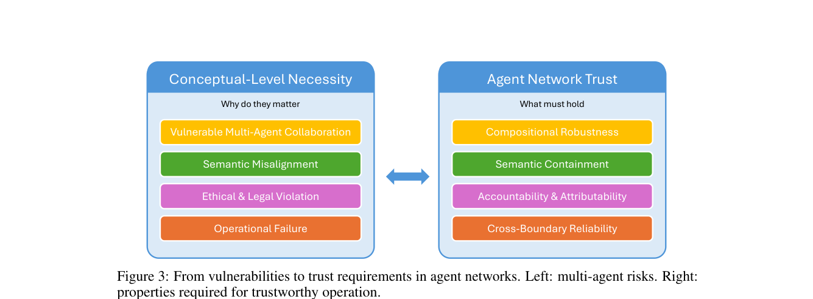
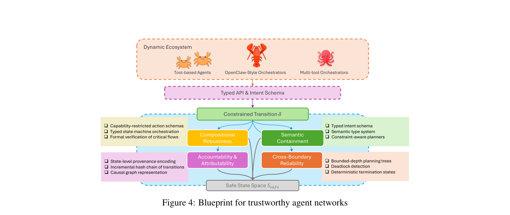

Compositional robustness
Safety must hold under agent composition when messages and tool calls chain.
Overview
1University of Southern California · 2Carnegie Mellon University · 3University of Illinois Urbana-Champaign · 4Stanford University
Large Language Models have enabled autonomous agents that plan, call tools, and execute multi-step workflows. As these agents move from isolated tools to collaborative Agent-to-Agent (A2A) networks, specialization and parallelism improve performance—but trust does not compose automatically.
Systemic failures such as adversarial composition, semantic misalignment, data re-identification, and cascading operational failures emerge from interaction dynamics. Bolted-on monitors and filters can detect some unsafe outcomes after the fact, yet leave unsafe trajectories reachable in the underlying transition dynamics.
This vision paper argues that trust must be baked into the coordination fabric: unsafe states should be unreachable by construction. We introduce the Trustworthy Agent Network (TAN) framework and organize it around four design pillars.

Interactive demo
Recorded multi-agent conversations under gpt-5.6-sol and claude-opus-5. This embed does not call a model API. Open fullscreen →
Highlights
External monitors leave unsafe states reachable if detection fails. Baked-in designs remove those transitions from the system topology.

The paper maps multi-agent failure modes onto four constitutive pillars of a Trustworthy Agent Network.

Safety must hold under agent composition when messages and tool calls chain.
Shared instructions must stay consistent; protocol-correct messages can still be unsafe.
Reachable states should encode provenance so actions remain attributable across handoffs.
Execution must remain live and bounded—no unbounded loops or resource blow-ups.
A constrained transition function over typed intents, with the four pillars jointly enforcing a safe state space.

References
@article{yao2026trustworthy,
title={Trustworthy Agent Network: Trust in Agent Networks Must Be Baked In, Not Bolted On},
author={Yao, Yixiang and Yao, Yuhang and Fan, Xinyi and Gao, Jiechao and Wang, Jie and Zhang, Minjia and Ravi, Srivatsan and Joe-Wong, Carlee},
journal={KDD 2026 Blue Sky Ideas Track},
year={2026},
note={arXiv:2605.19035}
}